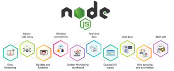
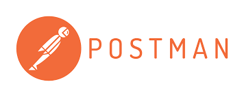

RESTful API
Representational State Transfer (REST) adalah sebuah standar arsitektur
komunikasi client-server berbasis web untuk komunikasi pertukaran data yang umumnya menggunakan protokol HTTP. Metode REST telah dikembangkankan oleh
Fielding yang didasari oleh empat prinsip utama teknologi, yaitu Resource identifier through Uniform Resource Identifier (URI), uniform interface (sumberdaya CRUD menggunakan operasi PUT, GET, POST, dan DELETE),
self-descriptive messages (sumberdaya tidak terikat sehingga dapat mengakses konten HTML, XML, PDF, JPEG, plain text, meta data, dll), dan stateful interactions through hyperlinks (bersifat stateless).
RESTful API adalah sebuah web service yang diimplementasikan dengan menggunakan HTTP dan prinsip REST (Representational State Transfer), dan sumber dayanya tersimpan di penyimpanan data.
Klien dapat mengirimkan permintaan dan server akan memproses permintaan tersebut (seperti permintaan membuat, menerima, merubah, dan menghapus sumber daya). Setelah server selesai melakukan pemrosesan permintaan,
server akan mengirimkan respon menuju klien sebagai hasil dari selesainya sebuah aksi. Format data yang dihasilkan dapat berupa xml atau json.
JavaScript

Sejak masa-masa awal web, JavaScript (JS) sudah menjadi teknologi dasar yang mendorong interaksi pada setiap konten web.
JavaScript dalam strukturnya meminjam beberapa konsep dan idiom syntax dari beberapa bahasa pemrograman, meliputi bahasa pemrograman C dengan akar pemrograman prosedural,
cara bekerja function seperti pada Scheme/Lisp, JS menjadi salah satu bahasa pemrograman yang mudah digunakan secara luas oleh para pemrogram. JavaScript
bekerja pada sisi client melalui browser.
Javascript adalah bahasa pemrograman yang digunakan untuk membuat web lebih dinamis dan interaktif. Javascript dibuat dan didesain oleh Brandan Eich,
seorang karyawan Netscape pada bulan September 1995. Awalnya bahasa pemrograman ini disebut Mocha, kemudian berganti nama lagi menjadi Mona,
lalu bergantii lagi menjadi Livescript, dan pada akhirnya menyandang nama menjadi Javascript. Pada akhirnya pada tahun 2006 Javascript telah beralih
dari bahasa pemrograman yang serba terbatas menjadi salah satu tool paling penting bagi web developer.
NODE.JS

Node.js adalah sistem perangkat lunak yang didesain untuk pengembangan aplikasi web. Aplikasi ini ditulis dalam bahasa JavaScript,
menggunakan basis event dan asynchrounous I/O. Tidak seperti kebanyakan bahasa JavaScript yang dijalankan pada web browser,
Node.js dieksekusi sebagai aplikasi server. Aplikasi ini terdiri dari V8 JavaScript Engine buatan Google dan beberapa modul bawaan yang terintegrasi.
Dalam buku Teixeira (2013,pV), server side javascript sudah beredar dari beberapa tahun lalu. Dalam versi serbelumnya berfokus pada menerjemahkan dari platform seperti Ruby, Phyton, PERL kedalam Javascript.
Dengan menggunakan Node.js kita dapat membuat programming model yang mudah dengan skala server yang cukup besar dengan mudah. Kelebihan Node.Js.
Yaitu Node is Easy – Node membuat I/O pemogramman menjadi lebih mudah dan dimengerti dari sebelumnya.
Node is Lean – Node tidak mencoba untuk menyelesaikan semua masalah, tetapi ini bergantung dengan pondasi internet protocol yang menggunakan fungsi API.
Node does note compromise – Node tidak mencoba untuk jalan dengan software yang sudah out of date. Karena Node Js memberikan tampilan baru yang fresh.
Node.js dapat dijalankan pada Windows, Mac OS X, dan Linux. Di samping itu, Node.js juga memiliki pustaka server
sendiri sehingga Anda tidak perlu menggunakan program server web seperti Nginx dan Apache. Dengan model eventdriven dan non-blocking I/O-nya,
Node.js lebih mampu menangani banyak proses secara bersamaan daripada platform bersifat thread-based networking.
POSTMAN
Postman adalah platform kolaborasi untuk pengembangan API. Dibuat oleh Abhinav Asthana, seorang programmer dan desainer yang berbasis di Bangalore, India, Postman memudahkan dalam menguji, mengembangkan, dan mendokumentasikan API. Fitur Postman yang sederhana membuat pengujian API dapat dilakukan dengan baik dan cepat. Cara kerja Postman dengan mengklasifikasi request berdasarkan request method, URL dan parameterparameter request.
PostgreSQL
PostgreSQL ada sejak tahun 1986 ketika POSTGRES, sebuah proyek penelitian dari University of California di Berkeley, dipimpin oleh peneliti basis data Michael Stonebraker yang sangat berpengaruh.
PostgreSQL adalah sistem manajemen basis data relasional open source yang dikembangkan. PostgreSQL merupakan software basis data relasional open-source yang berjalan pada platform Linux
dan berfungsi dengan objek sebagai komponen relasional dalam sistem manajemen basis data. Up and Running adalah sebuah sistem basis data yang disebarluaskan secara bebas menurut Perjanjian lisensi BSD.
Piranti lunak ini merupakan salah satu basis data yang paling banyak digunakan saat ini, selain MySQL dan Oracle. PostgreSQL menyediakan fitur yang berguna untuk replikasi basis data.
Fitur–fitur yang disediakan PostgreSQL antara lain DB Mirror, PGPool, Slony, PGCluster, dan lain-lain.
PostgreSQL sebagai pelopor bagi banyak software DBMS lain yang kemudian menjadi komersial. PostgreSQL memiliki lisensi GPL (General Public License) dan oleh karena itu PostgreSQL dapat digunakan,
dimodifikasi dan didistribusikan oleh setiap orang tanpa perlu membayar lisensi (free of charge) baik untuk keperluan pribadi, pendidikan maupun komersil.
PostgreSQL merupakan DBMS yang open–source yang mendukung bahasa SQL secara luas dan menawarkan beberapa fitur–fitur modern. Di mana setiap orang bebas untuk menggunakan PostgreSQL,
namun tidak boleh dijadikan produk turunan yang bersifat closed source.